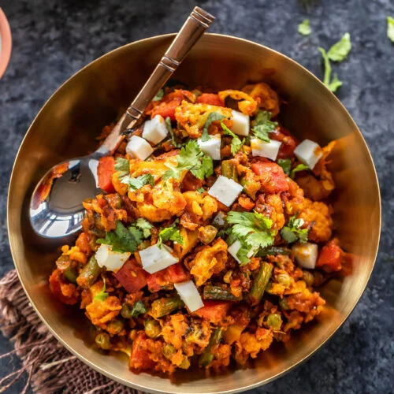
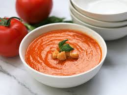

Shahi Paneer
Ingredients :
- Paneer tomato and onion (cubed) - 1 cup
- Cashews and almonds - 1/4 cup
- Ginger-garlic paste - 1 tsp
- Cumin seeds (shahi jeera) - 1/2 tsp
- Cloves - 2-3
- Cinnamon stick - 1 (small)
- Green cardamom and Turmeric powder - 2-3
- Chilli powder, Coriander powder and Garam masala - 1 tsp
- Heavy cream (optional) - 1/4 cup
- Ghee or oil
- Salt to taste
procedure :
Heat ghee/oil in a pan. Fry cashews and almonds until golden. Grind them to a paste. In the same pan, temper with cumin seeds, cloves, cinnamon, and cardamom. Add ginger-garlic paste and cook till fragrant. Add chopped onions and cook till translucent. Add tomatoes (if using) and cook till mushy. Blend the cashew paste, onions, and tomatoes into a smooth gravy. Add the gravy back to the pan. Add turmeric, chilli powder, coriander powder, and salt. Simmer for a few minutes. Add paneer cubes and simmer for another 5-7 minutes. (Optional) Stir in heavy cream for a richer texture. Garnish with chopped coriander leaves and serve hot with roti or naan.
pastery
Ingredients :
- Cake mix (chocolate)
- Canned cherries (drained, with juice reserved)
- Heavy cream
- Icing sugar
- Vanilla extract
- Chocolate shavings
- Fresh cherry (optional)
- choco chips
- vallina serup

procedure :
Bake cake according to box instructions in a small pan. Cool. Mix some cherry juice with cornstarch, heat till thick (filling). Whip cream with icing sugar and vanilla (whipped cream). Cut cake, layer with filling and whipped cream. Frost sides and top. Decorate with chocolate shavings and cherry.
Mix Veg
Ingredients :
- 2 tablespoons cooking oil
- 1 medium onion, chopped
- 1 teaspoon ginger-garlic paste
- 1 medium tomato, chopped
- 1/2 teaspoon ground coriander
- 1/2 teaspoon ground cumin
- 1/4 teaspoon turmeric powder
- 1/2 teaspoon red chili powder (adjust to spice preference)
- 1/2 cup chopped green beans
- 1/3 cup chopped cauliflower florets (blanch if desired for softer texture)
- 1/3 cup chopped carrots
- 1/4 cup frozen peas

procedure :
Heat oil in a pan over medium heat. Add chopped onion and cook until softened and translucent, about 5 minutes. Add ginger-garlic paste and cook for another minute. Add chopped tomatoes and cook until they soften and become mushy, about 5 minutes. Add coriander powder, cumin powder, turmeric powder, and red chili powder. Stir and cook for a minute to release the fragrance of the spices. Add chopped green beans, cauliflower florets, carrots, and frozen peas. Season with salt. Mix well, cover the pan, and simmer for 10-12 minutes, or until the vegetables are tender-crisp. You can add a splash of water if the mixture seems dry. Garnish with chopped coriander leaves (optional) and serve hot with rice or roti. Tips: You can adjust the vegetables based on your preference. Bell peppers, mushrooms, zucchini, or broccoli are all great additions. If you don't have fresh ginger and garlic, you can use 1/2 teaspoon of ginger-garlic powder instead of the paste. For a richer flavor, you can add a tablespoon of tomato puree or cashew paste along with the chopped tomatoes.
Tomato soup
Ingredients :
- 1 tablespoon olive oil
- 1 onion, chopped
- 2 cloves garlic, minced
- 1 (28-ounce) can crushed tomatoes
- 3 cups vegetable broth
- 1/2 teaspoon dried basil
- 1/4 teaspoon dried oregano
- Salt and pepper to taste
- 1 tablespoon heavy cream (optional)

procedure :
Heat olive oil in a pot over medium heat. Add onion and cook until softened, about 5 minutes. Stir in garlic and cook for another minute. Pour in crushed tomatoes, vegetable broth, basil, and oregano. Season with salt and pepper. Bring to a boil, then reduce heat and simmer for 15 minutes. Using an immersion blender or transferring to a blender in batches, puree the soup until smooth. Return to the pot and stir in heavy cream, if using. Heat through and serve hot.
Munhurian
Ingredients :
- 1 cup grated cabbage
- ½ cup grated carrot
- ¼ cup chopped capsicum (bell pepper)
- 2 tbsp chopped green onions
- 1 inch ginger, grated
- 2 cloves garlic, minced
- ½ tsp red chili powder
- ½ tsp black pepper powder
- ¼ cup corn flour
- ¼ cup rice flour
- tbsp chopped coriander leaves (cilantro)
- Oil for shallow frying
procedure :
In a large bowl, combine grated cabbage, carrot, capsicum,
ginger, garlic, red chili powder, black pepper, salt, coriander
leaves, and half of the corn flour and rice flour. Mix well. If
the mixture feels too loose, add remaining flour a tablespoon at
a time until it binds and forms small balls.
Heat oil in a pan over medium heat. Once hot, gently drop
small tablespoons of the mixture into the pan. Flatten them
slightly and pan-fry for 3-4 minutes per side, or until golden
brown and crisp. Remove from the pan and drain on paper towels.
Repeat with remaining mixture.
Enjoy your Non-Gravy Manchurian hot as a delicious snack or appetizer!
You can adjust the spice level by adding more or less red chili powder.
Mushroom
Ingredients :
- 200 grams mushrooms, sliced
- 1 medium onion, chopped
- 1 medium tomato, chopped
- 1 green chili, chopped (optional)
- 1 inch ginger, grated
- 1 clove garlic, minced
- 1 tablespoon vegetable oil
- 1/2 teaspoon turmeric powder
- 1 teaspoon coriander powder
- 1/2 teaspoon red chili powder (adjust to spice preference)
- 1/4 teaspoon garam masala
- Chopped coriander leaves, for garnish (optional)
procedure :
Heat oil in a pan over medium heat. Add the chopped onions and green chili (if using) and cook until softened. Then, add the ginger and garlic and saute for another minute. Add the turmeric, coriander powder, and red chili powder and cook for a further minute , stirring constantly to release the aroma of the spices. Add the chopped tomatoes and simmer until they become mushy and form a thick base. Now, add the sliced mushrooms and salt. Saute for 5-7 minutes, or until the mushrooms are tender and release their juices. Stir in the garam masala and cook for a minute more. Garnish with chopped coriander leaves (optional) and serve hot with rice or roti.